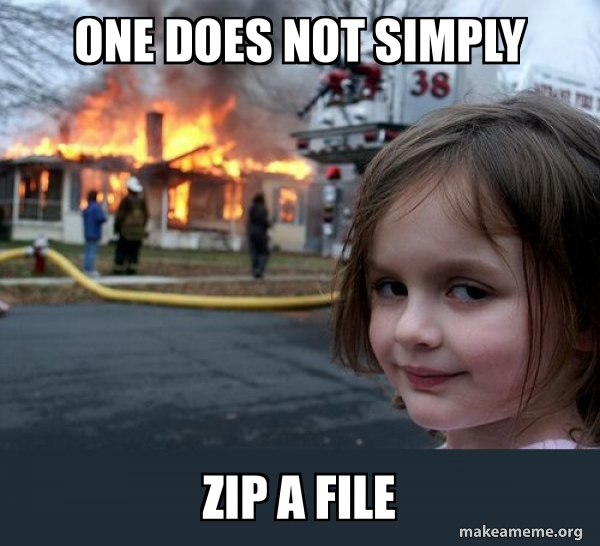
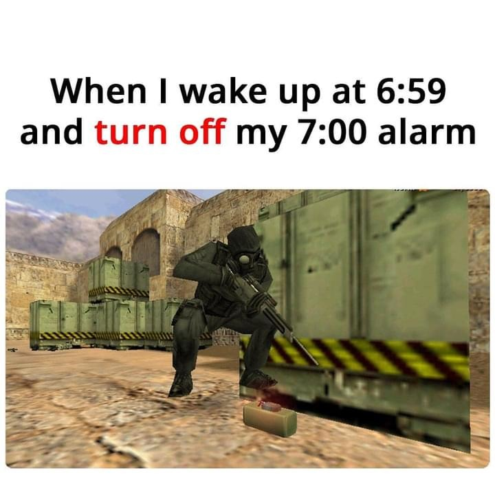
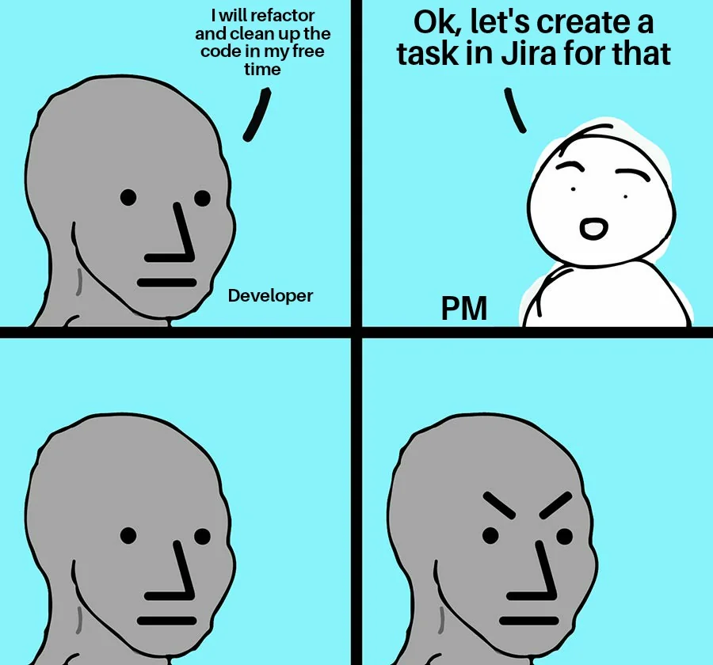

Hey there , how is it going !
I just unzipped some of my old files that had the code that I used to write when I was first coding .
At that time I thought that coding is a really engineered topic and it would take a lotta of times
Even to read the code that I wrote so might as well just delete it
But for some reason I just zipped it and brought it with me till here
It contains lotta of code looknig back I feel proud of my self
I can see a program that does match making for the IPL cricket league in java
A ticket system for a parking lot in C for 2 and 4 and other wheelers depending on the time they spend on parking

I actually did this beaucse in a recent interview I was asked a very silly question which I wasn't able to answer
The difference in union and structures in C.
This might not have been the deciding factor in my rejection but I still hoped' I'd give a correct answers for as many questions as possible
C is something that I have 5 star hacker rank rating that too in 2022

So as time passed I felt these basic topics were very silly to take space in brain and didn't give them any importance and eventually I forgot them
But now i don't feel code as an overengineered topic since its been around 3-5 years since I began coding so I can now read code easily make reviews and stuff
And I really enjoy it as well , P.S: that's what I do in my free time [ maybe I don't have a free time ].

Oh yea! I might make a repo that will contain some code that I have written .You know looking back at the frist code you ever wrote always gives a chill and goosebumps
I will notify you guys when I do that in some other blog, I still haven't gone throught the files yet , Its in GBs , maybe I have some tutorial videos as well so that's that
Also why I am making lots of html these days so everything I study related to CS is available in the web format on the internet , I am putting it on github and will mostly host in versel [ my website currently at ksurajsingh.github.io ] and once I have moni will buy myself a Domain buhahaha 😈
OK
B Y E ! !
believe in yourself